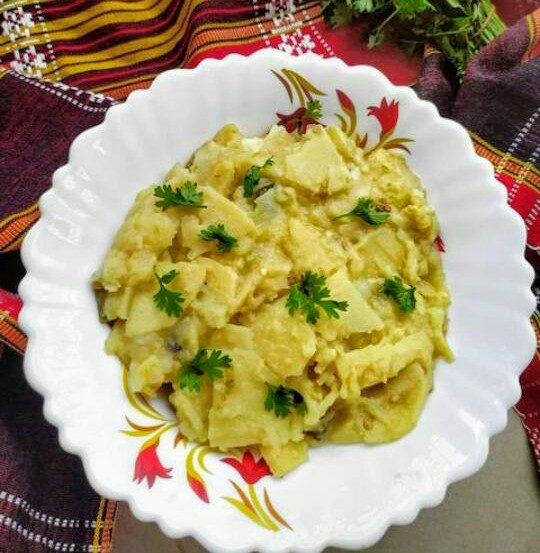

Muya Awandru
tripura's oil-free bamboo shoot pot, thickened with rice flour and pungent with dried fish

Contains: fish
Ingredients
Quantities for 4.
- 300g, fresh or brined, rinsed twice and sliced thin Bamboo Shoot
- 25g, rinsed and dry-roasted Dried Fishstands in for berma, the dry fermented fish at the heart of Tripuri mui borok cooking; the catalogue carries no berma
- 3 tbsp Rice Flourthe thickener. Slake it in cold water before it goes anywhere near the pot
- 1 large, cut into 2cm cubes Potatooptional
- 100g, cut into 3cm lengths French Beansoptional
- 5, slit Green ChilliTripuri food is genuinely hot; four is a compromise
- 1 tbsp, crushed Ginger
- 5 cloves, crushed Garlic
- 3 tbsp, chopped Coriander Leavesoptional
- to taste Salt
- 800ml, plus 4 tbsp cold for the slurry Water
Cookware
stovetop
Checked against the ingredient list for ten allergens: milk, egg, fish, crustaceans, tree nuts, peanuts, sesame, mustard, soy and gluten. Brands vary, so read the label on anything new to you.
Before you start
- Brined bamboo shoot needs rinsing twice and a 5-minute boil in fresh water before you start, or the whole pot tastes only of brine.
- Slake the rice flour in 4 tbsp of cold water and stir it smooth before it goes in. Tipped in dry it seizes into lumps that never dissolve.
- This is cooked without a drop of oil, which is the defining habit of mui borok. Do not be tempted to start with a tempering.
Method
- Rinse the bamboo shoot twice, cover with fresh water, boil 5 minutes and drain.Skip this and the sourness of the brine flattens everything else in the pot.
- Dry-roast the dried fish in a small pan over low heat 3 minutes, until brittle and toasty, then break it into pieces.
- Bring the 800ml of water to a boil with the crushed ginger, garlic, green chillies, roasted fish and salt. Boil 5 minutes so the broth takes on the flavours.
- Add the drained bamboo shoot and the potato and simmer 12 minutes, uncovered.
- Add the beans and cook 5 minutes, until the potato is soft enough to break with a spoon.
- Stir the rice flour into 4 tbsp cold water until completely smooth, with no dry specks.Cold water only. Warm water starts cooking the flour in the cup.
- Pour the slurry into the simmering pot in a thin stream, stirring the whole time, and cook 4 minutes until the liquid turns glossy and coats the back of a spoon.
- Taste for salt and heat, stir in the coriander and serve hot with plain rice.It thickens further as it cools. Take it off the heat looser than you want it.
Safe temperatures: Fish is done at 63°C / 145°F, or when it turns opaque and flakes easily. Reheat leftovers to 74°C / 165°F. FoodSafety.gov
Storage
Keeps 2 days refrigerated but sets firm as the rice flour cools. Reheat on low with 3-4 tbsp of water, stirring until it loosens back to a coating consistency.
Nutrition Good estimate
Low protein: 8 g a serving, 25% of the calories
| Per serving342 g | Per 100 g | |
|---|---|---|
| Calories | 134 kcal | 40 kcal |
| Protein | 8.5 g | 2 g |
| Carbohydrate | 25.0 g | 7 g |
| of which sugars | 3.9 g | 1 g |
| Fibre | 4.0 g | 1 g |
| Fat | 0.7 g | 0 g |
| of which saturated | 0.2 g | 0 g |
| of which unsaturated | 0.4 g | 0 g |
Estimated from raw ingredients using USDA FoodData Central.
More like this: Gluten-free Indian recipes · Dairy-free Indian recipes · Northeast Indian recipes
Times, yields, allergens and nutrition are guidance. Use your own judgement on doneness and on storing. More in About.